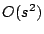

|
Keywords: Sequencing, SBH, models,
SBH-graph, errors, repetitions.
One of the most important problems in bioinformatics is the DNA-sequencing, that consists in determining the sequence of nucleotides of a given target piece of DNA. Several methods exist, mainly gel-based technologies, but a new method was developed at the end of the eighties, called sequencing by hybridization (SBH). This method produces a spectrum that is a set of oligonucleotides of the same length that are contained into the original sequence. But this set may contain different kinds of errors. Positive errors are oligonucleotides that are present in the spectrum but not in the original sequence. Conversely, oligonucleotides which are negative errors are not present in the spectrum but present in the original sequence. Finally if the sequence contains repetitions, any oligonucleotides present more than once in the original sequence will appear only once in the spectrum. For more than ten years, many studies have been dedicated to the classical problem which consists in rebuilding the original sequence from the erroneous spectrum. Usually, in these studies, the phases of modeling and rebuilding were not clearly distinguished. All used models correspond to different graph formulations according to kinds of errors that have been taken into account: no error [5, 6], only repetitions [4], exclusively both positive and negative errors [2]. But none of these models consider positive errors, negative errors and repetitions together. The first attempt to take all kinds of errors into account was a heuristic presented in [3], but the considered model was not suitable to this situation.
The problem we address is uphill from the
reconstruction itself, we study the graph formulation. We show
first that the solution spaces associated to the previous models
were not consistent for handling simultaneously all kinds of
errors. We propose two algorithms to build a new type of graph,
called SBH-graph, in which in addition to the elements of the
spectrum new vertices that are associated to potential negative
errors are added. The number of vertices to add is limited by
 if the number of oligonucleotides of
the spectrum is  . As soon as the original
sequence is covered (in the fragment assembly formulation ) by
the elements of the spectrum, we prove that SBH-graphs contain
a path corresponding to the original sequence. This is also
true when the spectrum presents hidden repetitions (lost
repeated patterns).
. As soon as the original
sequence is covered (in the fragment assembly formulation ) by
the elements of the spectrum, we prove that SBH-graphs contain
a path corresponding to the original sequence. This is also
true when the spectrum presents hidden repetitions (lost
repeated patterns).
The first algorithm consists in building a
multi-graph from the information coming from the overlapping
between the elements of the spectrum. Each vertex within this graph
corresponds to an element of the spectrum and the graph contains
the arc  valuated by
valuated by  if oligonucleotide
if oligonucleotide  overlaps
oligonucleotide
overlaps
oligonucleotide  by
by  bases and if there is no existing path of length
bases and if there is no existing path of length
 from
from  to
to  . The second algorithm tranforms the previous
multi-graph by removing arcs with values greater than
. The second algorithm tranforms the previous
multi-graph by removing arcs with values greater than
 . Such arcs are replaced by hypothetical
paths consisting of new arcs valuated by
. Such arcs are replaced by hypothetical
paths consisting of new arcs valuated by  and by new vertices corresponding to potential missing
oligonucleotides. When all arcs have a value equal to
and by new vertices corresponding to potential missing
oligonucleotides. When all arcs have a value equal to
 the resulting graph is a SBH-graph.
Experimental results show that the number of vertices in the
SBH-graph increases a lot. Indeed for sequences of a length of
the resulting graph is a SBH-graph.
Experimental results show that the number of vertices in the
SBH-graph increases a lot. Indeed for sequences of a length of
 , with oligonucleotides of length
, with oligonucleotides of length
 , the size of the spectrum is about
, the size of the spectrum is about
 oligonucleotides with the original
sequences containing about thirty repeated oligonucleotides.
The size of the SBH-graphs is about
oligonucleotides with the original
sequences containing about thirty repeated oligonucleotides.
The size of the SBH-graphs is about  vertices. We are currently investigating three distincts
directions for the sequence reconstruction phase. The first,
``brute force'' strategy, is to apply to the SBH-graph a
distributed heuristic based on ant algorithm [1]. The second consists in
reducing the size of SBH-graphs by the addition of new
constraints like information about the position of some
oligonucleotides within the sequence (as it is already done in
Positional SBH). Finally, the last investigated direction
consists in building the SBH-graph while rebuilding the
sequence.
vertices. We are currently investigating three distincts
directions for the sequence reconstruction phase. The first,
``brute force'' strategy, is to apply to the SBH-graph a
distributed heuristic based on ant algorithm [1]. The second consists in
reducing the size of SBH-graphs by the addition of new
constraints like information about the position of some
oligonucleotides within the sequence (as it is already done in
Positional SBH). Finally, the last investigated direction
consists in building the SBH-graph while rebuilding the
sequence.